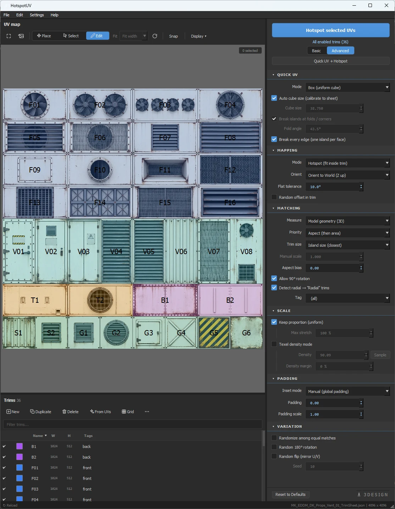

Trim-sheet UV mapping · 3ds Max
A UV island lands on the perfect trim, in one click. HotspotUV matches every island to the best-fitting trim by shape, area and texel density, then rotates and scales it into place. The whole run is a single Undo step. Built entirely on the standard Unwrap_UVW modifier.
The idea
A trim sheet is an atlas of rectangles (trims) you "snap" UV islands onto. Instead of fitting every island by hand, you select a batch of islands, and HotspotUV lays them out across the matching trims.
Video series
Six short episodes, about 25 minutes total: model the sheet from one plane, bake and texture it in Substance Painter, let HotspotUV build the trim sheet from an ID map, then UV entire props in one click. Everything on this page, shown live.
Trim sheets in 3ds Max have always been a manual job: line the island up with the trim, rotate it, scale it, check the density, repeat a few hundred times. The workflow above removes the repetition and leaves the decisions. Everything shown runs on the standard Unwrap_UVW modifier, so the result is a normal 3ds Max scene that any pipeline can open, and it works the same way in 3ds Max 2022 through 2027.
Setup · before you start
Hotspot needs a sheet of zones. The most reliable route: generate zones from existing UV islands: the trims then match the texture pixel-perfectly. A proven recipe (do it once, then just load the file):
If your sheet is a flat-color layout (color-ID), skip the recipe: File → New Trimsheet from Texture… turns every color block into a trim and sets the texture as the map background. The steps below remain the route for photographic trim sheets.
Create a Plane and assign a material with your finished trim-sheet texture, visible in the viewport, so it will guide the cuts.
Cut the plane along the trim borders (Edit Poly: Cut / Slice), following the edges visible on the texture.
Add Unwrap_UVW and split the cut faces into separate islands, each trim = one island. The plane's UVs already sit 1:1 on the texture, nothing to lay out.
Polygon mode, select all islands → click ✦ Generate Trims from UVs in HotspotUV. Zones are created in reading order, numbered Trim 01, 02…
Set the texture as the map background (Background → From Selected Object…), add tags / Fit axis / World W-H in Edit Trim and save the .json.
Alternatives. When you don't want to cut geometry:
Load the texture as the map background, enable Edit + Snap and build zones by hand: New Trim, Duplicate, drag on the map. Zero geometry.
For regular atlases: an N×M grid from one dialog, then tweak individual zones in Edit mode.
Open Trimsheet (.json) loads an existing sheet; Import Trimsheet merges zones from another file into the current one.
Workflow · 5 steps
This is the real sequence. Order matters.
File → Open Trimsheet (.json), the sheet built with the recipe above. The last used sheet reloads automatically.
Add / pick Unwrap_UVW, enter Polygon mode and select the faces of one or many islands. You can also select several objects at once.
On the map, switch to Select and click / drag-select trims. Nothing selected = all enabled zones.
In the right panel tune Mapping, Matching and Scale; flip to Advanced for Padding and Variation. Everything saves as you go.
Hit the big button. Islands snap into trims; one Ctrl+Z reverts everything. A summary line lands in the Listener.
Interface · full function reference
Twelve areas = the complete reference. Click a number on the screenshot or an item in the legend. Every area describes all of its controls. Use ‹ › to walk through the whole window.

Screenshot from 3ds Max 2024, HotspotUV v2.4 · MK_EDDM props sheet (4096², 36 trims)
Interactive · the matching engine
A simulator of the engine inside a faithful replica of the tool's UI. Change the island's shape and the Matching settings, trim selection happens live, with the same logic as in Max: nearest aspect first, then nearest area. Read the result like the MAXScript Listener.
Mapping · modes
The Mode option decides how an island sits in a trim.
Seamless V works like Seamless U with the axes swapped (width fitted, vertical overflow). From trim settings reads each trim's own Fit axis. one pass mixes all three strategies on a single sheet.
Good to know
Zones selected on the map. No selection → all enabled zones.
On a tie the zone closest to the island's current position wins, a stable round-trip. With Randomize → random.
2048 · √(areaUVW / areaGeom) from a reference island, or one click on Sample.
The whole hotspot is one step. A single Ctrl+Z reverts every island, multi-object runs included.
Bulk pipeline: ~1.7 ms per island. 1888 islands → about 3.3 s.
.json, pixels, background, inset, World W/H, fit axis.
1+ objects, an active Unwrap_UVW, Polygon mode, faces selected. The tool checks this before every run.
An island longer than a strip along its free axis is a legal match (it tiles anyway). The tightest strip that accepts it wins.
Ready to map
You've seen the workflow and the matching engine. The plugin sits on top of the standard Unwrap_UVW, no pipeline changes, one Undo per run.
Get HotspotUV →